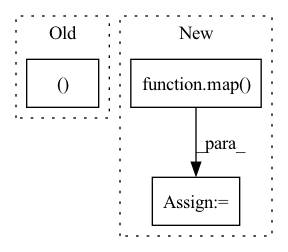

Pattern ID :427

Before Change
get_latent_attn = lambda: PreNorm(latent_dim, Attention(latent_dim, heads = latent_heads, dim_head = latent_dim_head))
get_latent_ff = lambda: PreNorm(latent_dim, FeedForward(latent_dim))
get_cross_attn, get_cross_ff, get_latent_attn, get_latent_ff = map(cache_fn, (get_cross_attn, get_cross_ff, get_latent_attn, get_latent_ff))
self.layers = nn.ModuleList([])
for i in range(depth):
After Change
get_latent_attn = lambda: PreNorm(latent_dim, Attention(latent_dim, heads = latent_heads, dim_head = latent_dim_head))
get_latent_ff = lambda: PreNorm(latent_dim, FeedForward(latent_dim))
get_latent_attn, get_latent_ff = map(cache_fn, (get_latent_attn, get_latent_ff))
self.layers = nn.ModuleList([])
cache_args = {"_cache": weight_tie_layers}
In pattern: SUPERPATTERN
Frequency: 3
Non-data size: 3
Instances
Fragment ID: 1288181
Project Name: lucidrains/perceiver-pytorch
Commit Name: dc530de88e6035a2f08d7e35ce23e57abe8371bd
Time: 2021-08-30
Author: lucidrains@gmail.com
File Name: perceiver_pytorch/perceiver_io.py
Class Name: PerceiverIO
Method Name: __init__
Parent Class: nn.Module
Fragment ID: 1288186
Project Name: lucidrains/perceiver-pytorch
Commit Name: 10a83b0c27f1bf9d0018a1d968a2fa397d8888c9
Time: 2021-03-22
Author: lucidrains@gmail.com
File Name: perceiver_pytorch/experimental.py
Class Name: Perceiver
Method Name: __init__
Parent Class: nn.Module
Fragment ID: 1288189
Project Name: lucidrains/tab-transformer-pytorch
Commit Name: 474d9654d739c8004502c08a49ba6fed51afadb6
Time: 2020-12-18
Author: lucidrains@gmail.com
File Name: tab_transformer_pytorch/tab_transformer_pytorch.py
Class Name: TabTransformer
Method Name: __init__
Parent Class: nn.Module